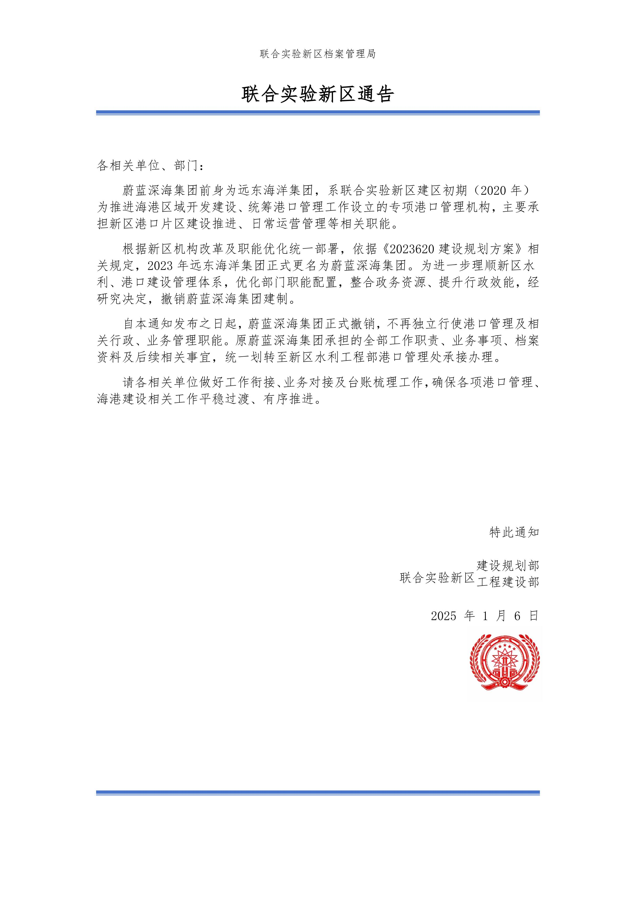
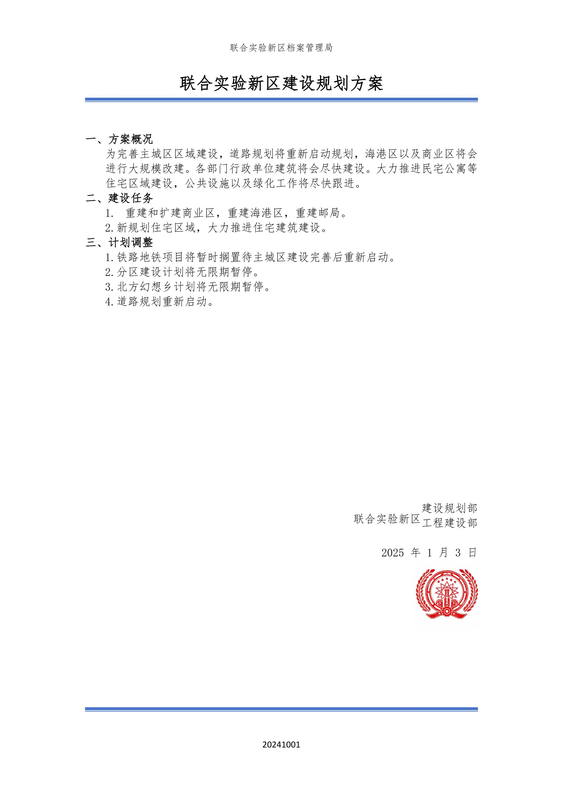
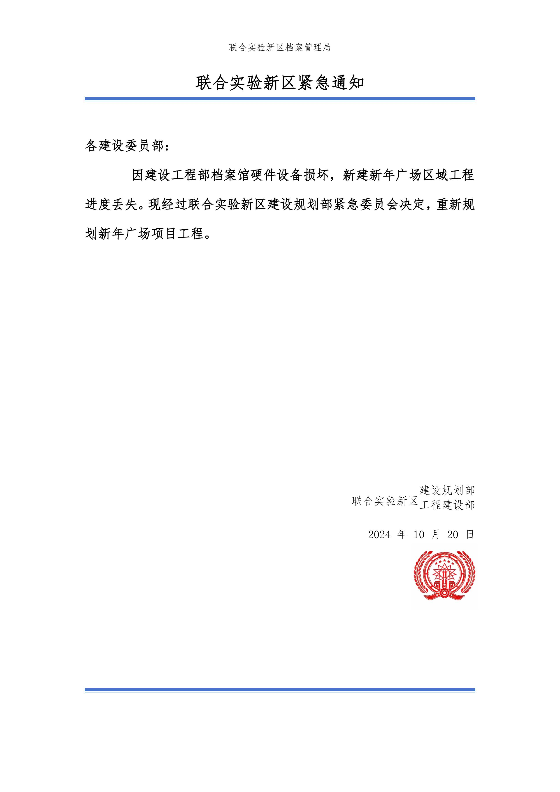
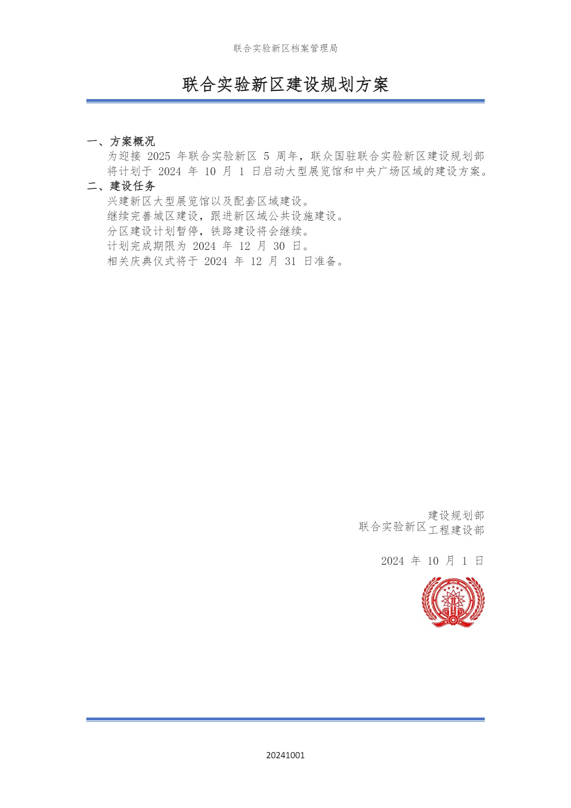
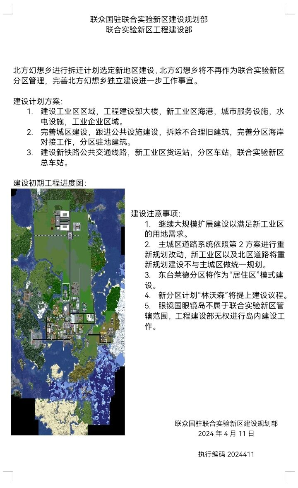
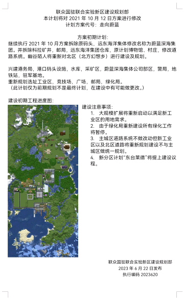
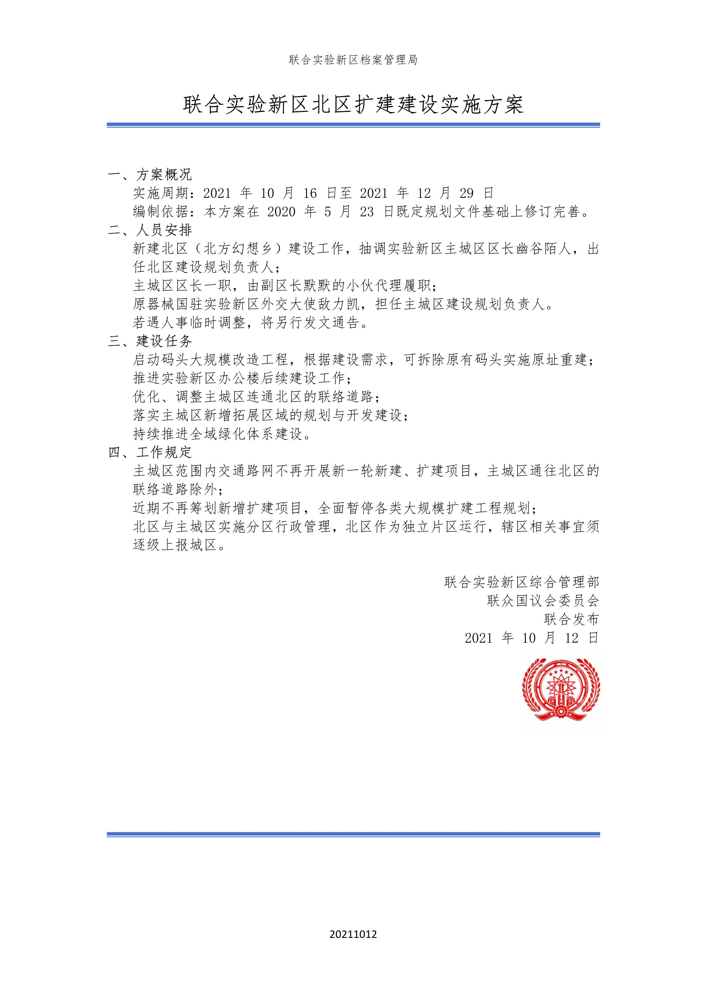
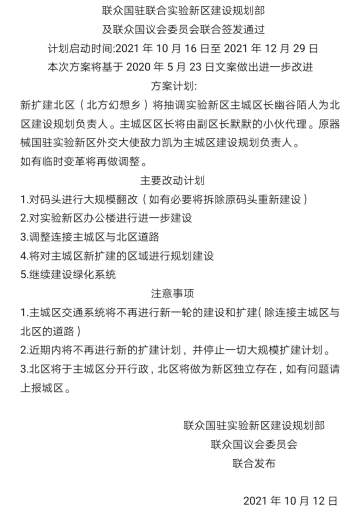

PLANS & RECORDS
规划方案档案
官方规划与建设记录依时间收录。点击卡片可查看完整档案；早期档案的原稿与新稿分别保留。
ARCHIVE / 01联合实验新区

档案编号：20250106
方案代号：撤销公告
说明：撤销公告
方案代号：撤销公告
说明：撤销公告
- 档案编号：20250106
- 方案代号：撤销公告
- 说明：撤销公告
ARCHIVE / 02联合实验新区

档案编号：20250103
方案代号：城区规划
说明：城区规划
方案代号：城区规划
说明：城区规划
- 档案编号：20250103
- 方案代号：城区规划
- 说明：城区规划
ARCHIVE / 03联合实验新区

档案编号：20241020
方案代号：紧急公告
说明：紧急公告
方案代号：紧急公告
说明：紧急公告
- 档案编号：20241020
- 方案代号：紧急公告
- 说明：紧急公告
ARCHIVE / 04联合实验新区

档案编号：20241001
方案代号：新年广场
说明：新年广场
方案代号：新年广场
说明：新年广场
- 档案编号：20241001
- 方案代号：新年广场
- 说明：新年广场
ARCHIVE / 05联合实验新区

档案编号：20240411
方案代号：北区拆除
说明：北区拆除
方案代号：北区拆除
说明：北区拆除
- 档案编号：20240411
- 方案代号：北区拆除
- 说明：北区拆除
ARCHIVE / 06联合实验新区

档案编号：20230620
方案代号：走向蔚蓝
说明：新区港口区大规模重建
方案代号：走向蔚蓝
说明：新区港口区大规模重建
- 档案编号：20230620
- 方案代号：走向蔚蓝
- 说明：新区港口区大规模重建
ARCHIVE / 07联合实验新区

档案编号：20211012
方案代号：北区扩建建设方案
说明：本方案修订依据为2020 年 5 月 23 日初代全域规划草案，该文件为新区初创阶段临时草拟文稿，仅内部口头流转、无标准化归档流程，未留存可对外公示的完整电子 / 纸质存档原件，原始底稿因早期存储设备迭代遗失，暂无复原渠道。本次 2021 北区扩建方案完整继承其核心框架，并对基建、行政分区、交通规划等内容完成规范化修订落地。
方案代号：北区扩建建设方案
说明：本方案修订依据为2020 年 5 月 23 日初代全域规划草案，该文件为新区初创阶段临时草拟文稿，仅内部口头流转、无标准化归档流程，未留存可对外公示的完整电子 / 纸质存档原件，原始底稿因早期存储设备迭代遗失，暂无复原渠道。本次 2021 北区扩建方案完整继承其核心框架，并对基建、行政分区、交通规划等内容完成规范化修订落地。
- 档案编号：20211012
- 方案代号：北区扩建建设方案(新稿)
- 说明：此为新稿
ARCHIVE / 08联合实验新区

档案编号：20211012
方案代号：北区扩建建设方案
说明：本方案修订依据为2020 年 5 月 23 日初代全域规划草案，该文件为新区初创阶段临时草拟文稿，仅内部口头流转、无标准化归档流程，未留存可对外公示的完整电子 / 纸质存档原件，原始底稿因早期存储设备迭代遗失，暂无复原渠道。本次 2021 北区扩建方案完整继承其核心框架，并对基建、行政分区、交通规划等内容完成规范化修订落地。
方案代号：北区扩建建设方案
说明：本方案修订依据为2020 年 5 月 23 日初代全域规划草案，该文件为新区初创阶段临时草拟文稿，仅内部口头流转、无标准化归档流程，未留存可对外公示的完整电子 / 纸质存档原件，原始底稿因早期存储设备迭代遗失，暂无复原渠道。本次 2021 北区扩建方案完整继承其核心框架，并对基建、行政分区、交通规划等内容完成规范化修订落地。
- 档案编号：20211012
- 方案代号：北区扩建建设方案
- 说明：此为原稿